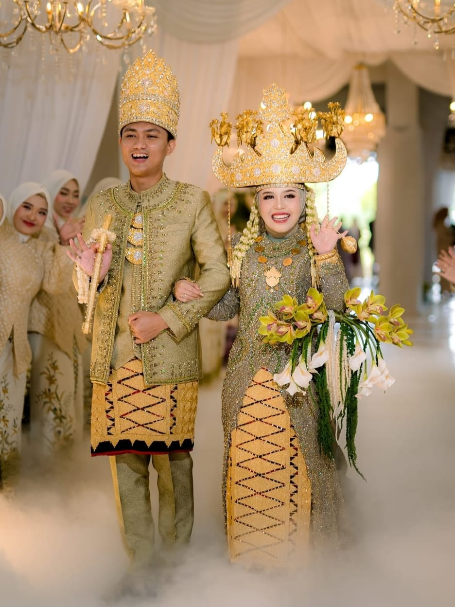

Adat Jawa ModernRizky & Amanda
Pernikahan adat Lampung Pepadun yang anggun dengan sentuhan modern di Ballroom. Mengusung siger 7 lekuk keemasan dan kain tapis jung sarat yang megah.
Venue: Aston Bandar Lampung
Dekorasi: Siger Pepadun by Siger & Co.
Dekorasi: Siger Pepadun by Siger & Co.